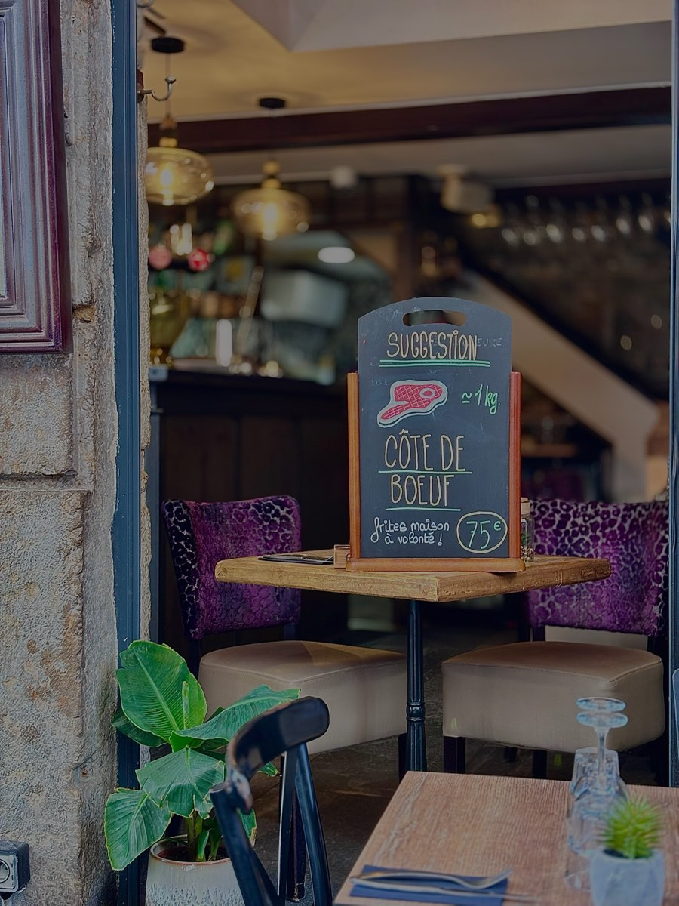
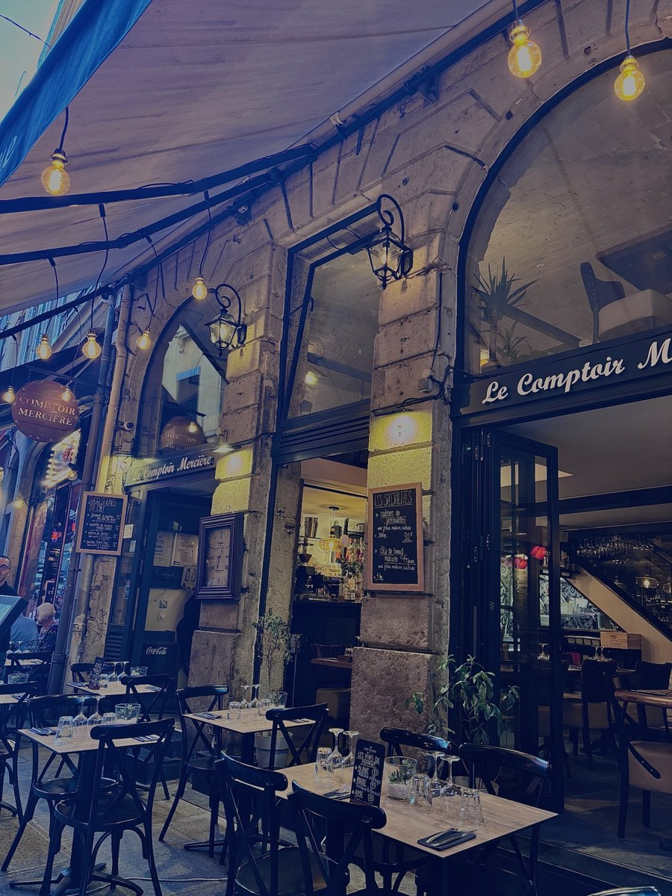
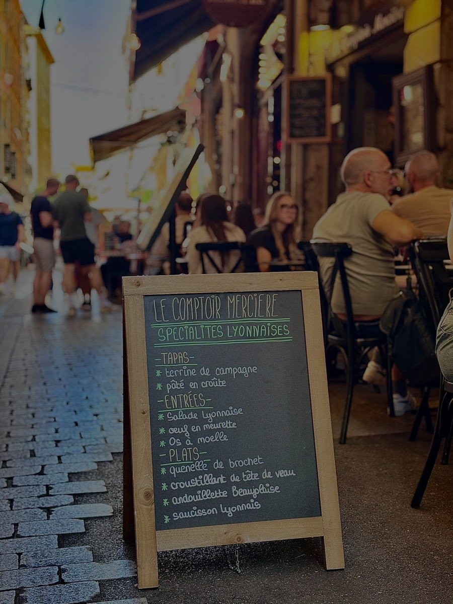
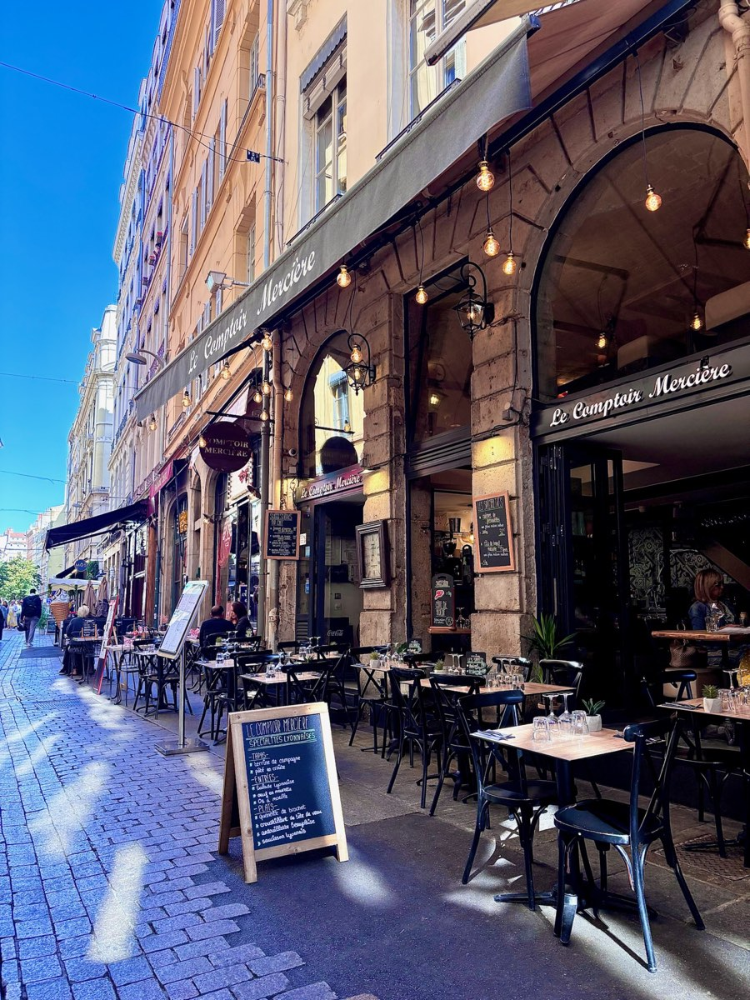
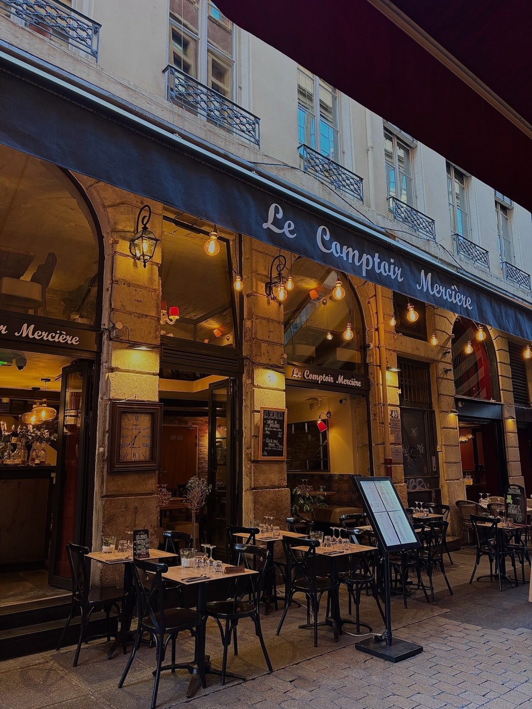

Côte de bœuf maturée 14 jours
Pour 2 personnes, frites maison à volonté et salade.
75 €Restaurant traditionnel lyonnais & terrasse au cœur de la Rue Mercière

Installé sous les arcades en pierre dorée de la Rue Mercière, en plein cœur du Vieux Lyon, Le Comptoir Mercière perpétue la tradition du bouchon lyonnais : produits soignés, recettes transmises de génération en génération et convivialité à toute heure.
Aux beaux jours, notre terrasse s'installe sur les pavés de la rue piétonne, entre lanternes et parasols. À l'intérieur, pierres apparentes, banquettes en velours et ambiance feutrée font tout le charme de la maison.
Accompagnées de frites maison et salade verte, comme il se doit.

Pour 2 personnes, frites maison à volonté et salade.
75 €
Et son riz, cuisson 25 minutes.
24 €
Sauce moutarde à l'ancienne.
19 €
Préparé et assaisonné en cuisine, frites maison.
18 €Toutes nos formules, tapas, viandes, poissons et desserts sur la page dédiée.
« Une adresse authentique en plein Vieux Lyon, la quenelle est excellente et le service très chaleureux. »
« La terrasse rue Mercière est parfaite pour dîner en été, cuisine généreuse et vraiment lyonnaise. »
« Cadre magnifique sous les arcades, cave à vin bien fournie et andouillette au top. »
| Tous les jours | 12h – 14h30 |
| 19h – 23h |
Horaires à confirmer avec l'établissement.
Réservez par téléphone, l'équipe du Comptoir Mercière se fera un plaisir de vous accueillir.